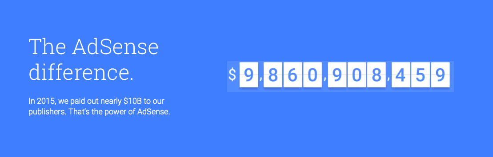

<?xml version="1.0" encoding="UTF-8"?>
<rss version="2.0"
xmlns:content="http://purl.org/rss/1.0/modules/content/"
xmlns:dc="http://purl.org/dc/elements/1.1/"
xmlns:slash="http://purl.org/rss/1.0/modules/slash/"
xmlns:atom="http://www.w3.org/2005/Atom"
xmlns:wfw="http://wellformedweb.org/CommentAPI/">
<channel>
<title>毒奶博主丨欢迎使用代理访问本站。 - 谷歌广告</title>
<link>https://limbopro.xyz/tag/谷歌广告/</link>
<atom:link href="https://limbopro.xyz/feed/tag/%E8%B0%B7%E6%AD%8C%E5%B9%BF%E5%91%8A/" rel="self" type="application/rss+xml" />
<language>zh-CN</language>
<description></description>
<lastBuildDate>Mon, 27 May 2019 00:13:00 +0800</lastBuildDate>
<pubDate>Mon, 27 May 2019 00:13:00 +0800</pubDate>
<item>
<title>Typecho 如何加入谷歌分析代码（Google analytics）</title>
<link>https://limbopro.xyz/archives/396.html</link>
<guid>https://limbopro.xyz/archives/396.html</guid>
<pubDate>Mon, 27 May 2019 00:13:00 +0800</pubDate>
<dc:creator>毒奶</dc:creator>
<description><![CDATA[为什么做站点，访问来源数据分析很重要。我的域名没有备案，被百度收录的可能性微乎其微，所以更多的流量可能来自各社群，推特，脸书等的推广，以及谷歌搜索。 就在前两天，在隐身模式下搜索了 limbop...]]></description>
<content:encoded xml:lang="zh-CN"><![CDATA[
<p></p><h2>为什么</h2><p>做站点，访问来源数据分析很重要。我的域名没有备案，被百度收录的可能性微乎其微，所以更多的流量可能来自各社群，推特，脸书等的推广，以及谷歌搜索。 </p><p>就在前两天，在隐身模式下搜索了 limbopro ，已经可以看到一些进展，部分关键词匹配的刚刚好，虽然排名不是很靠前，但未来在内容更新提高各个内容的相关度，谷歌搜索结果应该会好一些。</p><h2>怎么做</h2><p>登录你的<a href="https://www.google.com/adsense/start">Google adsense</a>或<a href="https://analytics.google.com/analytics/web/">Google analytics</a>，设置网站的相关信息，并获取 代码，将代码插入到 header.php 和 footer.php 内即可。（全局引入）具体操作如下...</p><p><code>进入管理后台 控制台 外观 编辑当前外观</code></p></img><p class="more"><a href="../../../archives/396.html" title="Typecho 如何加入谷歌分析代码（Google analytics）">[...]</a></p>
]]></content:encoded>
<slash:comments>0</slash:comments>
<comments>https://limbopro.xyz/archives/396.html#comments</comments>
<wfw:commentRss>https://limbopro.xyz/feed/archives/396.html</wfw:commentRss>
</item>
</channel>
</rss>